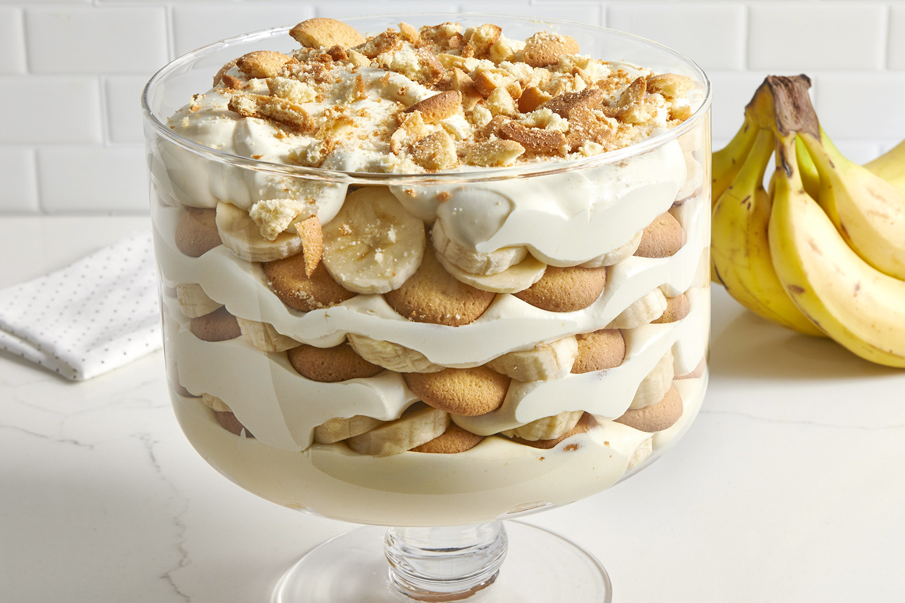

banana pudding baby!

Description
This recipe is for banana pudding, which is delicious in every capacity. Maybe not if there is too much banana flavor, sometimes there's like an artificial banana flavor in these and it's overpowering and unpleasant. But you're probably fine tbh
Ingredients
- Bananas
- Nilla wafers
- Banana pudding mix
- Butter, cream, milk idk
Steps
- First mix together the pudding mix and get it nice and creamy. Like extra smooth
- You can throw in some bananners if you want! But honestly just put some nilla wafers in there, those add nice texture to it
- I can't have sugar since I physically can't digest it. It sucks but I usually just eat whatever and then feel like garbo afterwards. That's just how I rolllllll hahaaaa but seriously take care of your gut health.